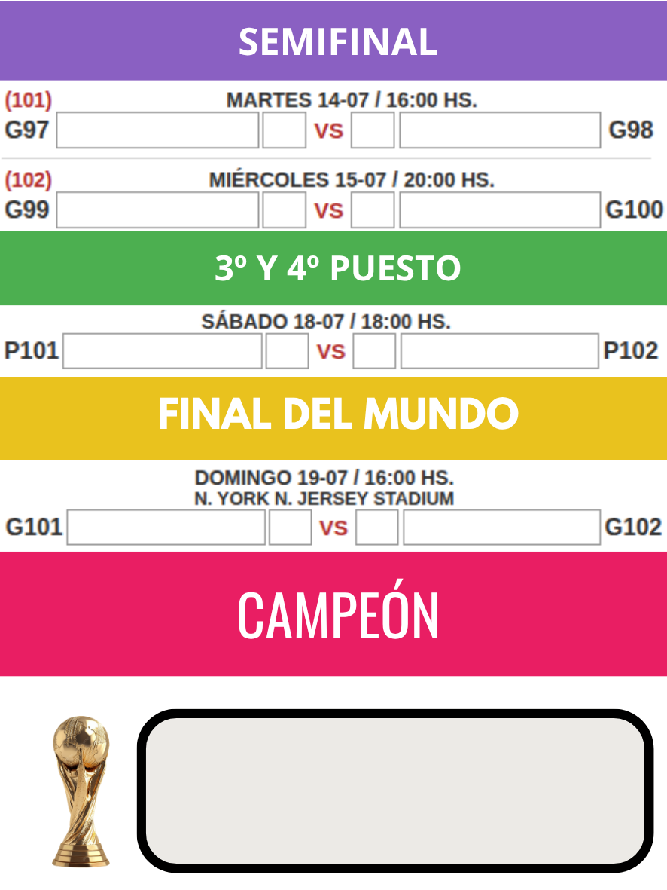
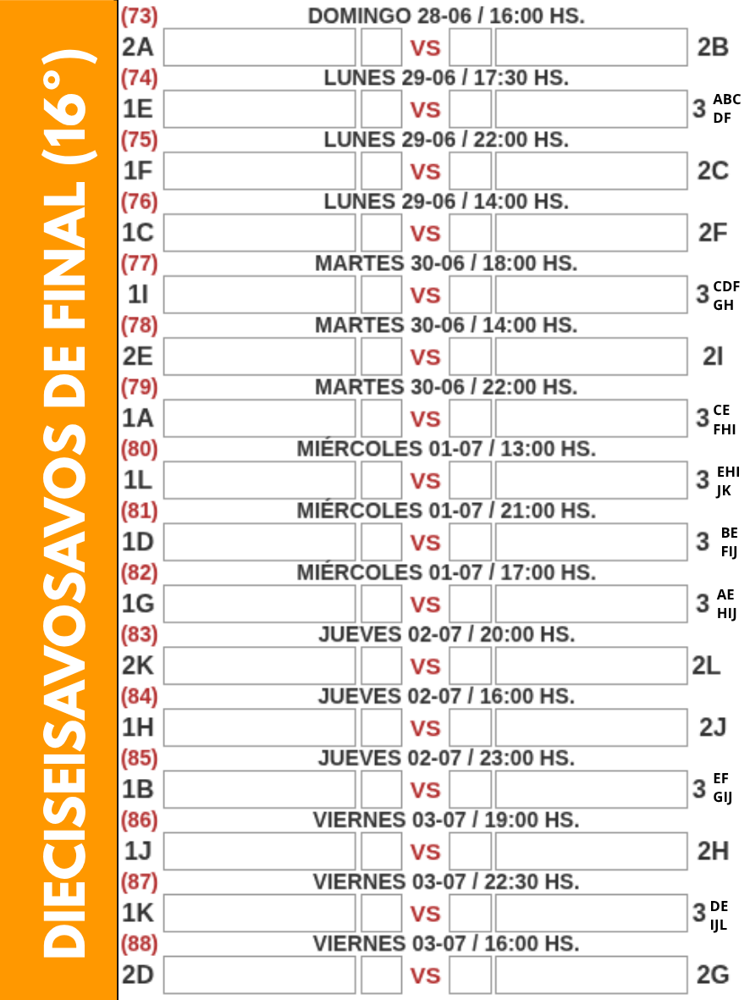
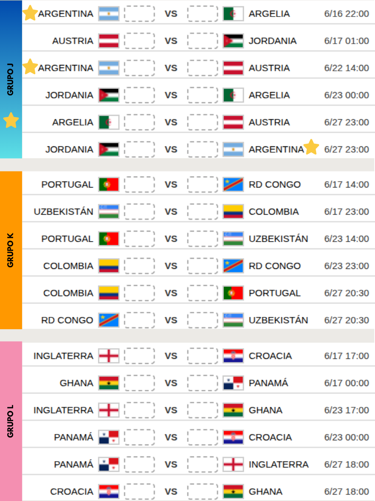
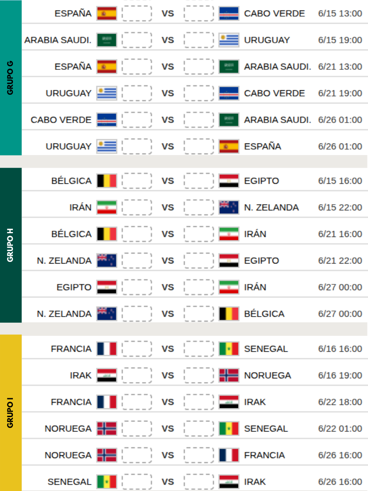
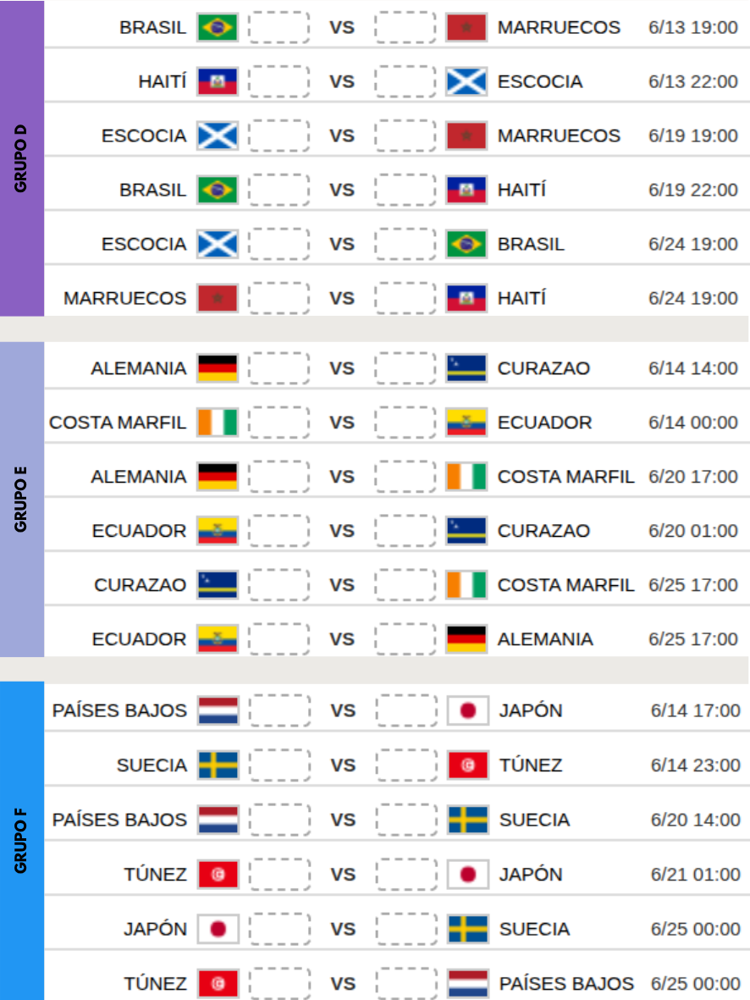
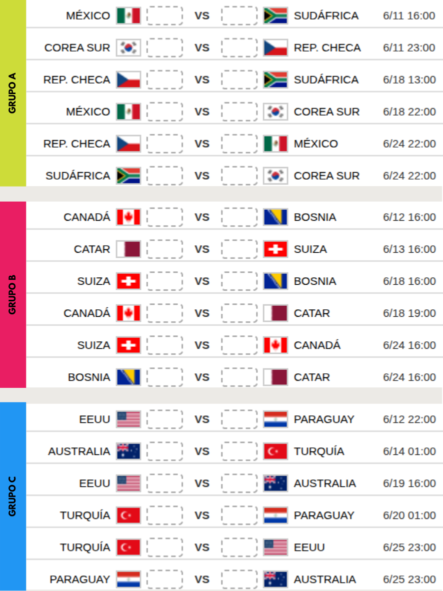

Paso 1: Crear Tapa
Subí tu imagen en formato 3:4 para armar la página principal.
¿No tenés imagen? Créala con Inteligencia Artificial
Copia la siguiente plantilla y reemplaza lo marcado con tus datos. Luego, envíalo a un generador como Copilot Designer o ChatGPT.
Título superior: '[TU TÍTULO PRINCIPAL]'.
Título central con letras grandes y llamativas: 'Fixture Mundial 2026'.
Abajo incluye en pequeño números o íconos de contacto: WhatsApp [TU NÚMERO] e Instagram [TU USUARIO].
El fondo debe disimular imágenes relacionadas a [TU TEMÁTICA, ej: tijeras, salón, peinados]."
Descarga tu imagen favorita de la IA, y luego hacé click en "Subir TU Imagen" más abajo.
Paso 2: Colores de Filtro
Modifica los colores que se multiplicarán sobre las imágenes para darles el tono de tu fixture.
Tip de Diseño
Te recomendamos colocar colores llamativos en el primer y tercer selector de las esquinas, y elegir blanco en el centro para dar el mejor contraste de resplandor.
Paso 3: Previsualización de tarjetas
Revisa cómo afecta tu paleta de colores sobre cada una de las imágenes.






Paso 4: Exportación Final A4
Este formato está estrictamente configurado para hoja A4. Ajustamos la vista para que quepa en tu pantalla.
Mini Tutorial: ¿Cómo doblar y armar tu Fixture?
Una vez que imprimas y recortes tu PDF, armar el fixture es súper sencillo. Sigue este diagrama para realizar los pliegues correctamente de forma acorde a las marcas. ¡Así conseguirás tu formato perfecto de bolsillo ideal para repartir!